25 МИНУТ
2000 рублей
подойдёт для автопортретов, семейных съёмок, парных съёмок, съёмок с питомцами или детьми
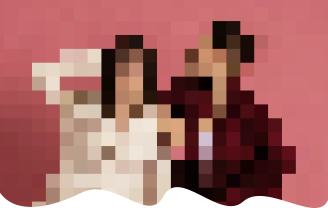
фотостудия автопортрета, где нет фотографа. Здесь не видно камеры, она спрятана за зеркалом. Ты сам руководишь процессом съёмки — благодаря маленькому пульту в руках.

подойдёт для автопортретов, семейных съёмок, парных съёмок, съёмок с питомцами или детьми
средняя продолжительность съёмки, подойдёт для смены нескольких образов или семейной съёмки
подойдёт для больших компаний, семейной съёмки или для съёмок во множестве образов
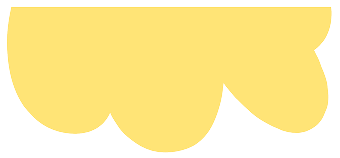
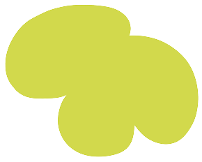
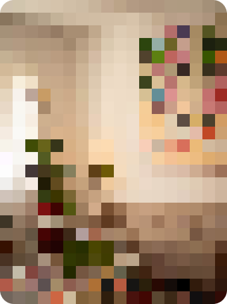
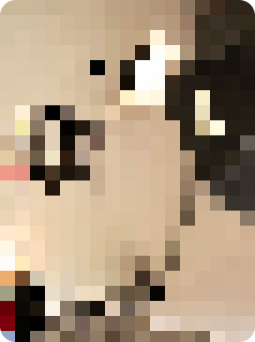
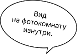
Записаться на съёмку можно онлайн через этот сайт или через администратора. Бронирование съёмки происходит после полной оплаты.
В студии вас встретит администратор и проведёт небольшой инструктаж. После съёмки он расскажет о том, как получить готовые кадры.
В фотокомнате перед вами будет зеркало, за которым спрятана камера. В руках будет небольшой пультик - им можно будет делать кадры.
Количество кадров неограниченно. Также в фотокомнате есть реквизит, который можно использовать во время съёмки.
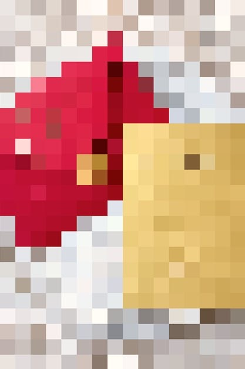
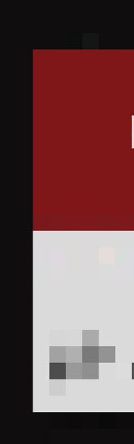
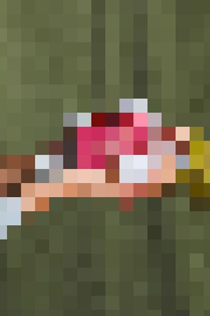
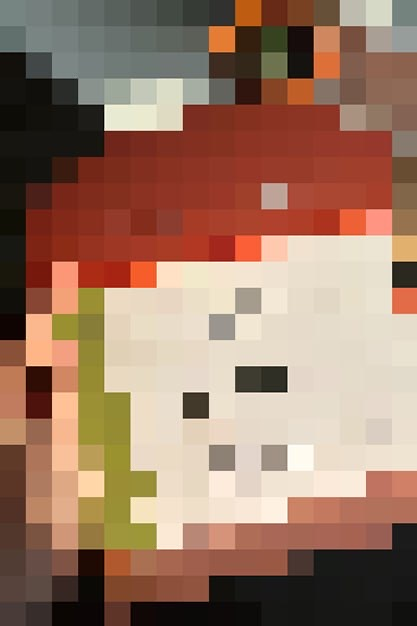

ДЛЯ СЪЁМКИ МОЖНО ВЫБРАТЬ ФОН ИЗ ДОСТУПНЫХ ЦВЕТОВ.* АКТУАЛЬНЫЕ ЦВЕТА ФОНОВ НА ДАННЫЙ МОМЕНТ — БЕЛЫЙ, РУБИНОВЫЙ, РОЗОВЫЙ, ИНДИГО, ЧЁРНЫЙ.
*В тарифах съёмки на 25 и 40 минут можно выбрать два цвета фона, в тарифе на 90 минут — три цвета.
SELF — это идеальное место для того, чтобы провести время наедине с собой или близкими и запечатлеть свои самые искренние эмоции.
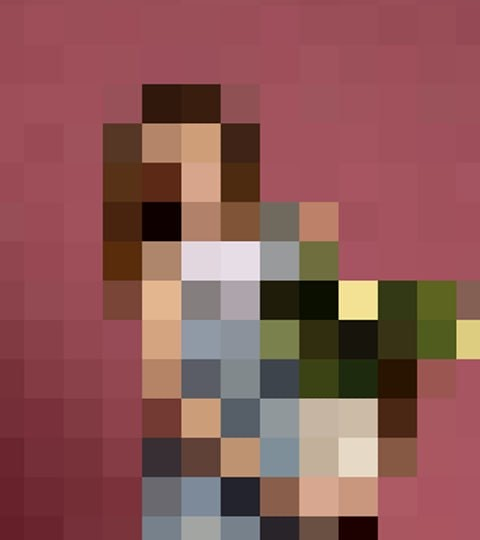
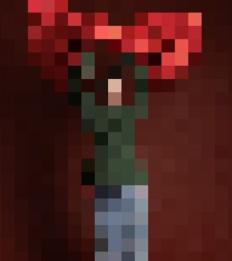
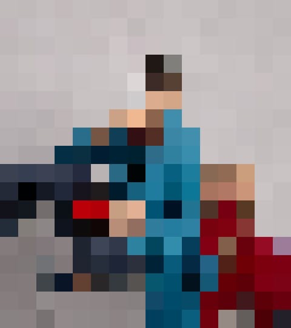
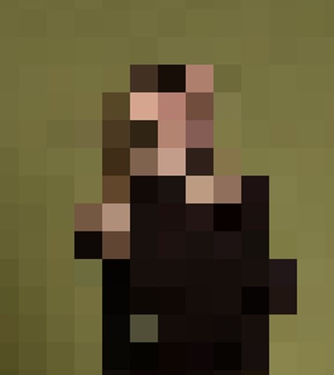
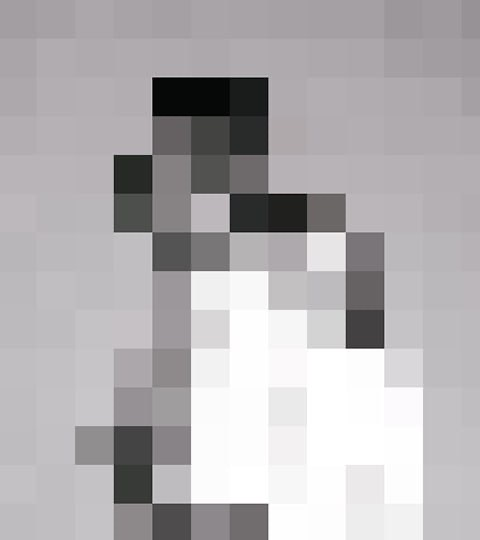
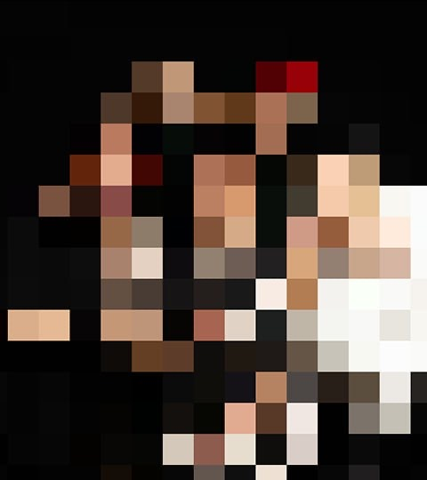
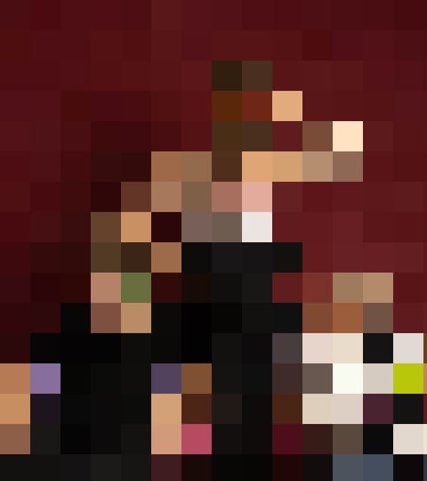
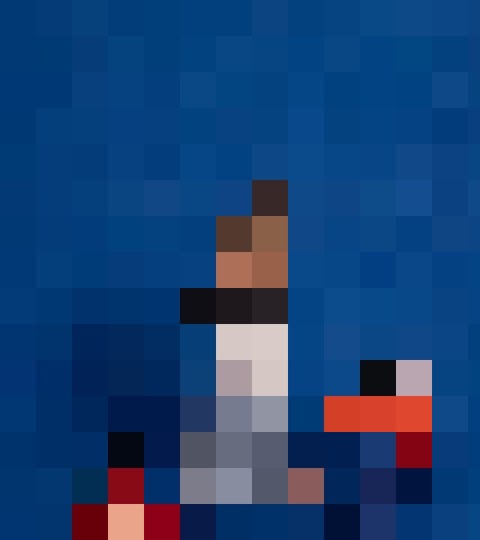
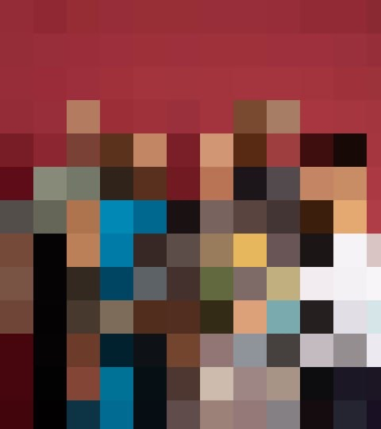
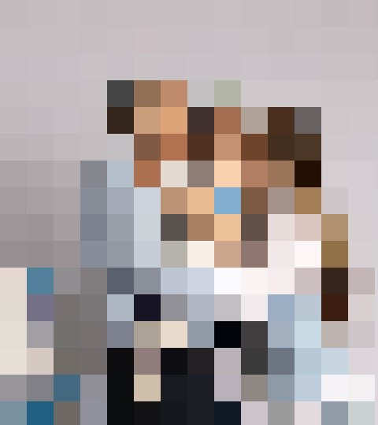
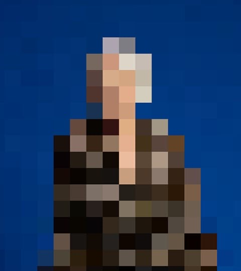
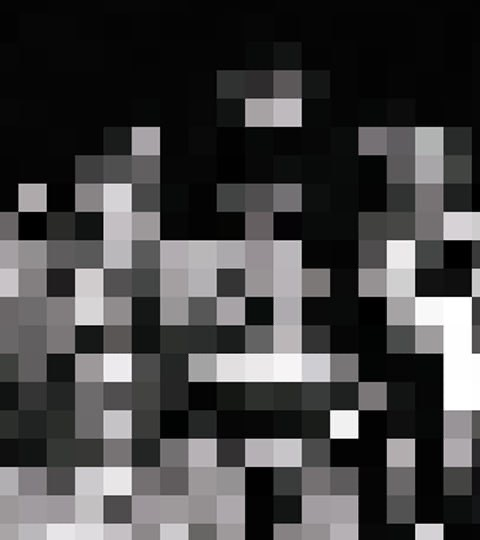